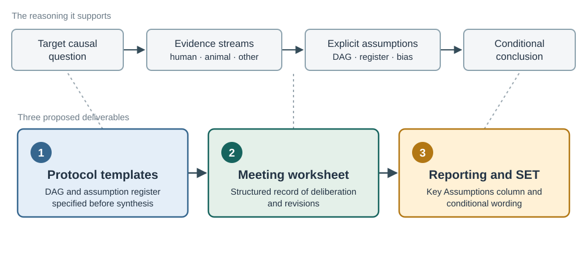

Making causal assumptions explicit in triangulation
Interpreting cross-stream agreement under explicit causal assumptions
DISCUSSION DRAFT · CONCEPTUAL FEEDBACK FIRST
The problem
Cross-stream agreement in triangulation is currently interpreted without making explicit the causal structure, proxy validity, and applicability assumptions that connect each stream to the target question — and shared biases can manufacture apparent agreement.
The conceptual claim to stress-test
Target relationship → Stream-specific contribution → Connecting assumptions
This is the unit of reasoning I want the team to stress-test: whether it captures what warrants a cross-stream judgement, including when shared bias could explain agreement. The methodological aim is to make that reasoning explicit and reviewable; the templates are its practical application.
Where this sits methodologically
Directed acyclic graphs (DAGs) are familiar tools for making the assumptions behind confounding control within a study explicit. This proposal extends that logic to the between-stream setting: which target relationship each stream informs, and which identifying, proxy, and applicability assumptions connect its contribution to that target.
What I mean by the framework
The working notes call this “scaffolding”: a linked set of visual and written tools that helps a team make its assumptions explicit and carry its reasoning between stages of a review.
The DAG visualises the hypothesised causal structure. An assumption register records the assumptions, their rationale, and what could challenge them. The Summary of Evidence table (SET) connects the findings to those assumptions. The three templates guide how the team prepares, discusses, and reports this information.
See the worked TAAR1 DAG and register →

Three templates as methods contributions
The templates are the practical application of the framework.
| Proposal | What would change? | Practical output |
|---|---|---|
| 1. Protocol templates | Use a DAG to identify assumptions and plan how evidence could inform them. | Proposed wording for both protocol routes. |
| 2. Triangulation meeting worksheet | Record how evidence and bias affect interpretation of the DAG and its assumptions. | A four-step worksheet to complete in Word. |
| 3. Reporting and evidence summary | Connect the conclusion to the assumptions it depends on. | Existing SET columns plus Key Assumptions, and reporting wording. |
Two applications, at different stages
| Application | Stage and purpose |
|---|---|
| TAAR1 | A retrospective reconstruction showing what the framework could make explicit in a completed triangulation. |
| LSR8 · Heat & Mental Health | The ongoing application, introduced after protocol completion while the living systematic reviews are being conducted. |
Feedback sought
- Conceptual: Is the proposed unit of reasoning appropriate: a target relationship or causal query, the stream-specific evidence contribution, and the assumptions connecting them?
- Conceptual: Does the register clarify the distinction between causal structure, identification, proxy validity, and applicability? What is missing or redundant?
- Practical: What is the minimum useful information for a protocol, a meeting, and a published SET? Who should maintain it across updates?
- Evaluation: What observations in LSR8 would show whether the framework changes the clarity, consistency, or burden of deliberation?
This discussion concerns qualitative appraisal and documentation. Quantitative parameterisation and weighting are later developments. About and references.